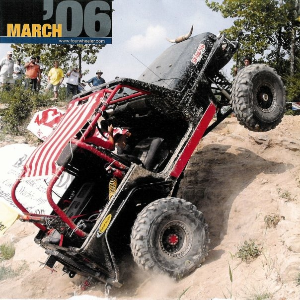
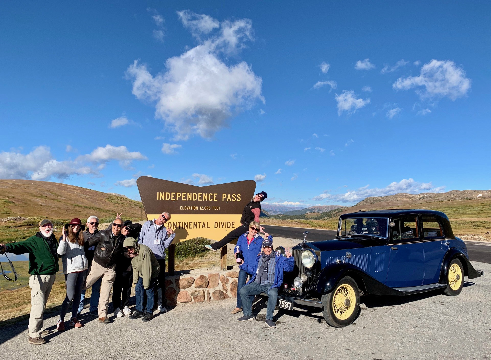

“Money may not buy happiness, but I'd rather cry in a Jaguar than on a bus.” ― Françoise Sagan
Cars are more than their mechanical being. They are a reward for hard work. They can be hard work...I restored a 1973 Jeep...work. But the sense of accomplishment is tangible and fills your soul. They help you get far away..or bring you closer to friends. You have the ability to see places you'd never see otherwise.
Restoration is one path but modification is another. Sometimes you need technical ability to get places no one else can go. My 1999 Jeep TJ was built as a Rockcrawler and was invited to Four Wheeler magazine's annual "Top Truck Challenge". Mostly, though, I explored the back areas of Utah with friends. We assisted park rangers in hauling material up for trail maintenance.


Cars bring us together...whether it is your original, unrestored 1966 Mustang and your girlfriends or celebrating the climb of Independence Pass.

Love on 4 wheels...usually...

Not kidding about that.
Lucy has a 325 mile range and is a nimble driving experience.